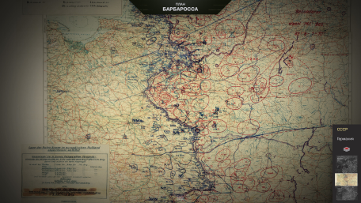
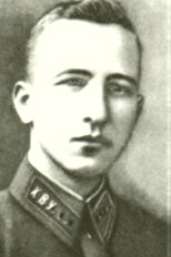
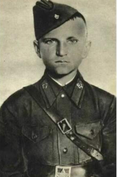
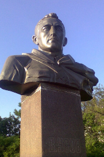
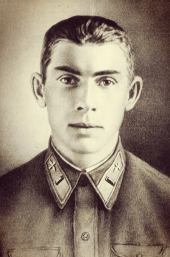
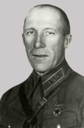
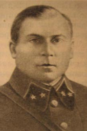
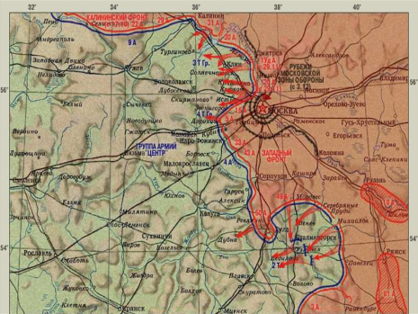

Великая Отечественная война (22 июня 1941 — 9 мая 1945) —важнейшая составная часть Второй мировой войны, в ходе которой Красная Армия разгромила вооруженные силы Германии, изгнала их с территории СССР и освободила оккупированные Третьим рейхом страны Восточной и Центральной Европы. В ходе героических наступательных действий Красной Армии Вторая мировая война завершилась взятием советскими войсками Берлина и безоговорочной капитуляцией гитлеровской Германии.
Не встретив значительного сопротивления к июню 1941 г. армия нацистской Германии оккупировала территории 12 европейских государств и вплотную подошла к границам Советского Союза для начала реализации главной военно-политической цели – разгрома Советского Союза. Немецкая армия развернула у границ СССР гигантскую армаду отборных, хорошо обученных и вооруженных войск.
В воскресенье 22 июня 1941 года около 4 часов утра войска фашистской Германии без объявления войны атаковали западную государственную границу СССР на всем ее протяжении. Главная ставка генерального штаба немцев делалась на сокрушающую мощь внезапного первого удара концентрированных сил авиации, танков и пехоты к жизненно важным политическим и экономическим центрам советской страны. Этот тактический план гитлеровцев вошел в историю под кодовым названием «Барбаросса». Беларусь в числе первых советских республик была подвергнута беспощадным ударам врага.
План Барбаросса считается одним из самых масштабных военных планов в истории человечества. Опираясь на имеющийся опыт молниеносной войны для отправки на фронт Германия подготовила военный контингент общей численностью около 5,5 млн человек, вооружённых самым мощным и передовым оружием и техникой того времени. Среди главных целей плана Барбаросса значилось уничтожение советской армии и захват природных ресурсов СССР.
План содержал детальное описание молниеносных атак по трем направлениям:
22 июня 1941 года в 12 часов дня все население Советского Союза застыло у радиоприемников. Народный комиссар иностранных дел СССР Вячеслав Михайлович Молотов объявил о нарушении гитлеровской Германией договора о ненападении и начале войны. В первые дни войны, не смотря на упорное сопротивление советских войск, немецкая армия быстро продвигалась вглубь территории СССР. Для стратегического управления Красной Армией 23 июня 1941 года советским руководством была создана Ставка Верховного Главнокомандования. По всей стране была объявлена масштабная мобилизация, организована работа тылового обеспечения, подготовлен план эвакуации важных промышленных предприятий на Урал, Поволжье, Сибирь и Среднюю Азию.
Пограничные войска Белорусской ССР с первых секунд войны приняли на себя удар немецких войск. Даже находясь в окружении противника стояли на своих рубежах бойцы пограничной заставы в Брестской крепости. Стояли до последнего патрона, насмерть… Помогали защитникам Брестской крепости воспитанники полков — 12—15-летние подростки, среди которых был Петя Клыпа. «Умрем, но из крепости не уйдем». «Я умираю, но не сдаюсь! Прощай, Родина. 20.VII.41 г.». Стены Брестской крепости до сих пор говорят с нами голосом свои героически погибших защитников – мужчин и женщин, взрослых и детей, военных и гражданских…
По плану "Барбаросса" на захват каждой советской пограничной заставы немцы отводили всего 30 минут. Гитлеровцы были хорошо осведомлены о численности и вооружении застав. Зачастую силы вражеских войск превосходили силы пограничников более чем в 10-20 раз. В отличие от немцев с их танками, самолетами, минометами, автоматами и пулеметами в арсенале пограничников были в основном винтовки. Но именно пограничники первыми показали немецкой армии, что их планам о молниеносной войне не суждено сбыться.
В 30 километрах от Гродно недалеко от Августовского канала пограничники небольшой заставы на границе Беларуси, Польши и Литвы отбили семь атак противника и сдерживали первые удары немецкой армии. Пограничники вели бой более восьми часов! Большинство из них – молодые ребята по 18-19 лет. Не ожидавшие такого отпора немцы решили не брать пленных. Раненных добивали, женщин и детей расстреливали. К 12 часам дня оборонять заставу было уже некому… После войны заставу снова отстроили и назвали именем погибшего героя-командира – лейтенанта Виктора Усова, навсегда зачисленного в личный состав подразделения. Это подразделение и сегодня находится на том же месте, что и 80 лет назад.
 Бои на территории Беларуси в первые месяцы войны золотыми буквами вписаны в историю Великой Отечественной самоотверженностью и героизмом белорусского и советского народа. Под Радошковичами командир эскадрильи капитан Николай Гастелло с согласия экипажа направил подбитый самолет на группу немецких танков и автомобилей, совершив наземный таран. В обороне Минска принимала участие 100-я стрелковая дивизия под командованием генерал-майора Ивана Руссиянова. Защитники столицы для борьбы с танками использовали так называемую «стеклянную артиллерию» — бутылки с горючей смесью, прозванные на Западе «коктейлем Молотова».
В. М. Усов
П. С. Клыпа
 Чрезвычайно напряженным характером отличались бои в районе Могилева. Только за один день бойцы стрелкового полка под командованием Семена Кутепова уничтожили 39 фашистских танков. Оборона города продолжалась 23 дня. Для сравнения: столицу Франции — Париж — германская армия взяла фактически без боя, столица Голландии — Амстердам — была захвачена на четвертый день боев. Мощное сопротивление войск Красной Армии в ходе двухмесячных оборонительных боев на территории Беларуси не позволили противнику реализовать план «молниеносной войны» и дали советским войскам возможность подготовиться к обороне на московском направлении.
Памятник В. М. Усова в Гродно
Н. Ф. Гастелло
 И. Н. Руссиянов
С. Ф. Купетов
Получив жестокое сопротивление части вермахта вышли на подступы к Москве только к концу сентября. В период с конца сентября 1941 по апрель 1942 на московском направлении советскими войсками был проведен целый комплекс оборонительных и наступательных военных операций против фашистских войск, вошедший в историю ВОВ как «Битва за Москву».
Так как план захвата Москвы в первые же недели войны провалился, немецким командованием была разработана операция под кодовым названием «Тайфун». Поначалу операция «Тайфун» шла по намеченному немцами алгоритму. Прорвав оборону советских войск германские войска к 6 октября вышли в район западнее Вязьмы взяли в окружение четыре армии Западного и Резервного фронтов. В середине ноября бои шли уже на ближних подступах к Москве.
В начале декабря советские войска перешли в контрнаступление в направлении южной и северной группировке противника. Армия Западного фронта отбросила немецко-фашистские войска на 90-110 километров в западном направлении, а началу января 1942 года немецкие войска были оттеснены от Москвы уже на 100-250 километров. В ходе наступательных боев Красная Армия нанесла тяжелый урон 38 дивизиям противника и освободила свыше 11 тысяч советских населенных пунктов.
Битва за Москву стала первым крупным поражением Германии в Великой Отечественной войне. Ценой невероятного мужества и огромных потерь советского народа эта битва разрушила миф о непобедимости фашистов. Медалью «За оборону Москвы» позже наградили более одного миллиона защитников города. План молниеносной войны рухнул даже в глазах у немцев.
После победы под Москвой советское руководство предприняло ряд наступательных операций с целью быстрейшего разгрома противника. Будучи недостаточно проработанными и не имея необходимых ресурсов, все они оказались провалены. Так, в ходе Харьковская операция в мае 1942 года сотни тысяч советских солдат были окружены и уничтожены. Это поражение Красной армии открыло немцам дорогу на Волгу и Кавказ.
Летом 1942 года немецкая армия сконцентрировала удар на южном участке фронта для захвата основных источников продовольствия на Дону и Кубани и нефтяных месторождений Кавказа. Под натиском немцев советские войска вынуждены были отойти за Дон, а к концу августа противник подошел к Сталинграду, ставшему театром ожесточенных городских боев. К концу года Сталинград был практически уничтожен.